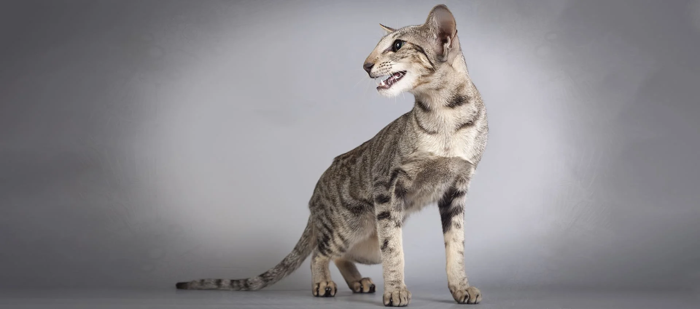

Ориентальная кошка
Ориентальная кошка – порода, которая по форме тела напоминает сиамских представителей, но отличается окрасом шерстки. На протяжении долгого времени ориенталы вели аборигенный образ жизни, первые упоминания в письменных источниках появились в конце 19-го столетия, при этом официально порода признана в середине 20-го века благодаря действиям европейских селекционеров. Первые представители породы отличались короткой шерстью, но при помощи экспериментов заводчикам удалось вывести длинношерстную особь. В природе ориенталы имеют самые разнообразные окрасы.
Описание породы
Эволюция породы начиналась с простых окрасов, это были красные, лиловые и коричневые оттенки шерстяного покрова. Сегодня больше всего ценятся окрасы с рисунками табби, где на короткой шерстке имеются пятнышки, мраморные абстракции и полоски. Редко, но встречаются в природе экзотические цвета, такие как циннамон и фавн. Кошки ориентальной породы обладают клиновидной формой головы, удлиненной шеей, ровным носом, большими ушками, широкими и закругленными у основания. По своему характеру ориентальные кошки сочетают в себе привязанность к людям и бунтарский темперамент. В жизни они очень ласковые и умные, чаще всего находятся в центре внимания. Ради этого животные готовы разучить некоторые команды, поэтому, неплохо поддаются простой дрессировке. Их отличает верность к людям, выражающаяся не меньше, чем у собак, плохая переносимость одиночества, так как им больше по нраву компании людей. Им нравятся активные игры и помощь хозяевам в домашних делах. Ориентальная порода кошек стала популярной не только за незаурядную внешность, но и за свое крепкое здоровье. Наследственных заболеваний у животных нет, при надлежащем уходе и питании кормами суперпремиум класса, питомцы живут очень долго (в среднем 18 лет). Есть несколько проблем, которые могут сильно подкосить состояние ориенталов, это синдром плоской грудной клетки и прогрессирующая атрофия зрительного нерва. Уход
Уход
У короткошерстных ориентальных кошек отсутствует подшерсток, поэтому особый уход шерстки не требуется. В период линьки рекомендуется расчесывать животное фурминатором до двух раз в неделю и купать в зависимости от степени загрязнения. У породы имеется склонность к зубным болезням, поэтому, чтобы не допустить стоматологических заболеваний, необходимо чистить зубы раз в неделю, используя при этом специальную щетку и зубную пасту.
У короткошерстных ориентальных кошек отсутствует подшерсток, поэтому особый уход шерстки не требуется. В период линьки рекомендуется расчесывать животное фурминатором до двух раз в неделю и купать в зависимости от степени загрязнения. У породы имеется склонность к зубным болезням, поэтому, чтобы не допустить стоматологических заболеваний, необходимо чистить зубы раз в неделю, используя при этом специальную щетку и зубную пасту.